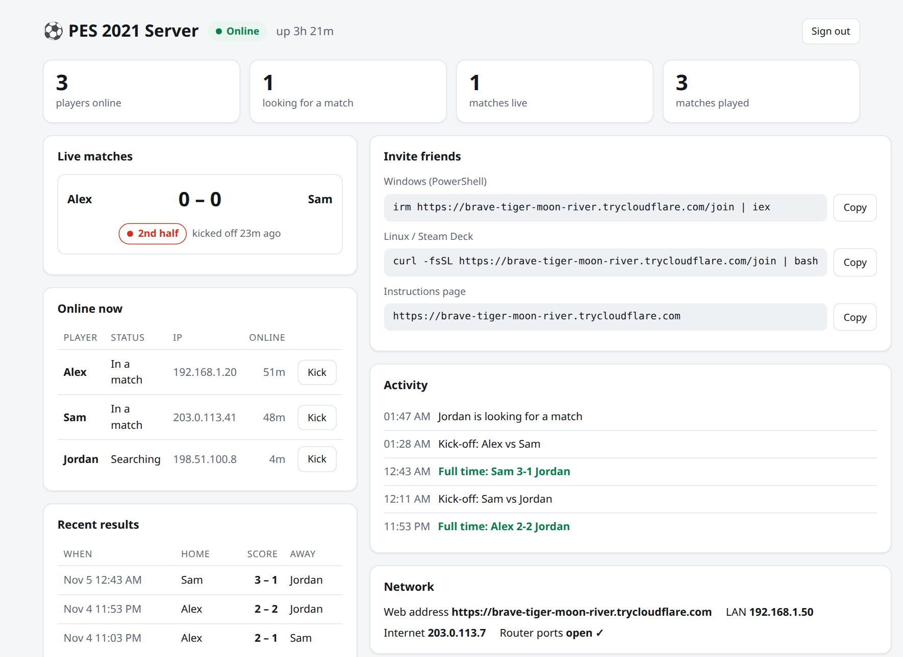
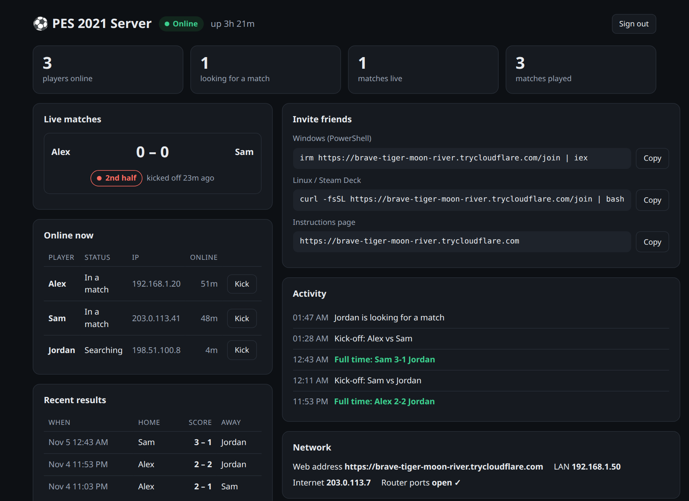

Konami switched off the online servers for eFootball PES 2021. This project brings online Quick Match back: one friend runs a small server, everyone else joins with one line, and you play real online matches again.
You need: PES 2021 on Steam (v1.01.00) for every player, and one Linux PC or cheap server to host.
1 command to host
1 line to join
0 game files changed
Where things stand
What you can play today
Early, but real: complete 90-minute online matches have been played from kick-off to full time through this server. Here's exactly what's proven and what isn't yet.
Works
Online login with your own player name
eFootball → Quick Match matchmaking
Full matches: both halves, fouls, cards, half-time
Results saved, then straight into the next match
Linux players (Steam + Proton)
Ready, needs testers
Windows players: the join script is written but not yet run on a real Windows PC
Steam Deck: same as Linux, not yet tried on a Deck
Friends in different homes: so far tested only on one home network
Not yet
myClub, events and official rankings
Rooms, lobbies and 2v2 co-op
A relay for players whose routers block direct connections
Tried it on Windows, a Steam Deck or across two homes? Tell us how it went; it's the most useful thing you can do for the project right now.
Get playing
Three steps, about five minutes
Every player needs their own copy of PES 2021 on Steam (version 1.01.00, the final update). One person hosts; nobody touches the game files.
1
The host starts the server
Use any Linux computer that stays on while you play: your gaming PC, a laptop, a Raspberry Pi or a cheap cloud server. Open a terminal, paste the command and press Enter.
It asks for your password (sudo), installs Docker if it's missing, and when it's ready shows your server's web address, the line for your friends and your admin password.
Playing on the same PC? If PES 2021 is installed there, the installer offers to set it up for you too.
Linux terminal
curl -fsSL https://raw.githubusercontent.com/MohamedAliRashad/pes2021-private-server/main/install.sh | sh
⚽ PES 2021 SERVER ● ONLINE
Your serverhttps://brave-tiger-moon-river.trycloudflare.com
Send to friendsirm https://brave-tiger-moon-river…/join | iex
Admin page…/admin · password k7Rm-2Qx9-PaLw
Windows or Mac host? It works with Docker Desktop, but takes a few more steps (your IP address in a settings file, and opening router ports yourself): Windows / Mac hosting guide.
2
Friends join, once
Each player runs the line the host sends them, once.
Windows: press Start, type PowerShell, open it, paste the line, press Enter and click Yes. If Windows Firewall later asks about PES 2021, click Allow.
Linux: start the game once from Steam, close it, then paste the line in a terminal.
Steam Deck: switch to Desktop Mode, open Konsole, type passwd to set a password if you never have, then paste the line.
What this changes on your PC
Adds 6 lines to your hosts file so Konami's old server names point to your friend's server.
Trusts your friend's server certificate. On Windows it goes into the machine's Trusted Root store; on Linux only inside the game. It's locked to Konami's names (konami.net), so it can't be used for any other website.
Nothing else, and never the game files. Run the line with leave instead of join to undo both. Read the scripts: Windows · Linux.
Use the exact line your host sends you: your-server-address is only a placeholder. Opening the server's address in a browser shows the same lines with copy buttons.
3
Play
No more setup. From now on you just start the game.
Start PES 2021. The first time, pick your region, accept the terms and choose a player name.
Go to eFootball → Quick Match, pick a team and press Go to Matchmaking.
When two players are searching, the server pairs them. Press Proceed, then both press Kick Off.
No accounts to create, and in most homes no router settings to dig through.
A free web address
Each server gets a link like brave-tiger-moon-river.trycloudflare.com, through Cloudflare's free tunnel service. Friends at home and far away use the same link; their PC works out the best way to reach you.
Opens its own ports
Most home routers have a feature called UPnP that lets programs open the ports they need. The server uses it, and tells you in plain words if it couldn't or if your internet provider blocks it.
An admin page
Password-protected: who's online, matches in progress and their stage, final scores, a league table, and a kick button.


The real admin page, filled with demo players.
Under the hood
How PES 2021's online mode actually works
Nobody handed us a manual. We worked this out by watching what the game sends, reading how its code reads the replies, and answering it until it believed it was talking to Konami again. Here's what we found, in plain words.
01
Your game checks in at three desks before you see the menu
When you open eFootball, the game connects to a server address it remembers from Konami and checks in at three "desks" in turn, like at an airport:
1 · Gate"Here are our servers, 53 web addresses you'll need, and today's date."
2 · Account"Who are you?" Checks your Steam ID and creates your player the first time.
3 · MenuThe online lobby, on a fresh connection. Your game says "still here" every 30 seconds.
Konami's servers no longer answer, so the game can't get past the first desk. Our server just has to be a convincing desk clerk, and the join line tells your PC that Konami's addresses now live at your friend's server.
02
Every message is a sealed parcel
The game never sends plain text. Each message is wrapped in four layers, and the server has to unwrap and re-wrap them exactly the same way:
4 · Scrambled and fingerprinted
every byte mixed with a repeating 4-byte pattern, plus a checksum so damage is noticed
3 · Locked
with a key built into the game, then a fresh key the server hands out at login
2 · Squashed
compressed, when the message is big
1 · The letter: { msgid: "CMD_GET_SVRLIST", patch_version: "1.01.00" }
Here is the very first message a real copy of the game sent us, before and after unwrapping:
What travels (first 40 of 152 bytes)
5b ff 2e e4 5b 9f 2e 65 7f 6d
62 e5 27 8e 58 d0 78 15 1a 9d
0c d0 fc 43 01 03 6a 29 fe 7d
a2 6a ad ef 0d 0e 3e b0 f4 85 …
In other words: "please send me the server list." The letter is written in MessagePack, a compact cousin of JSON. The lock is Blowfish, a cipher from the 1990s, with a 56-byte key stored inside the game.
Fun find: the first 16 bytes of that built-in key are identical to a key from Metal Gear Solid V, another Konami game built on the same Fox Engine. Konami reused its own homework.
03
The game is an extremely strict reader
Being almost right isn't enough. The game reads replies field by field and either crashes or quietly misbehaves when anything is off:
Wrong format, instant error. Replying in JSON instead of MessagePack gives error C_GKCC_0008_200 at login.
A number where it expects text made the Terms of Use screen pop up again and again, forever.
A setting of zero in the server's timeout values made every match abort while loading.
The breakthrough was realising the game describes its own expectations: its code lists the exact fields of almost every reply. We extracted 398 reply formats straight from the game instead of guessing. For the hundreds of messages the server doesn't need to understand, it simply answers "OK", and the game falls back to its built-in defaults.
04
The connection test is a real security check
Before eFootball modes unlock, the game tests your network. It asks a server "what's my address from the outside?" (a STUN check), then fetches a small status page over HTTPS.
That HTTPS request checks certificates exactly like a web browser does. A stand-in server without a trusted certificate fails the test, and the online modes stay locked. That's why the join line installs your server's certificate, locked to Konami's names so it can't vouch for anything else.
05
Matchmaking hinges on one exact sentence
When you press Go to Matchmaking, the game says "I'm looking" once, then goes completely silent and waits. It never asks again. The server has to tap it on the shoulder with a message that says, precisely, matching finished, who is home, who is away, and where to find each other.
Get one word wrong and the game ignores it, waits five minutes, and shows an error. For a while our two test players searched forever while sitting next to each other.
06
The match itself never goes through the server
Once paired, the two games connect directly to each other and play the match between themselves. The server only passes a few short notes between them ("I'm ready", "I've left") and otherwise stays out of the way. That's why it's tiny: about 50 MB of memory.
It still hears how the match is going, because both games report every stage:
DATASYNC
TEAMSELECT
MATCHMENU
GAMELOAD
ENTRY
1ST
BREAK1
2ND
END
Both games report the same fouls and cards, and their clocks stay in sync. At full time each sends the final score and match stats. The admin page's match stages, results and league table are built from these reports.
07
Error codes are hidden breadcrumbs
Codes like EYRH763 look random. They aren't: the four letters are a scrambled form of the name of the source file where the error happened, and the number is the line in that file. We wrote a small decoder that matches the letters against every file name left inside the game:
Code
Where it comes from
What it meant for us
EYRH763
OnlineModeTaskQuickMatching.cpp
"Match found" message missing a word: gave up after 5 minutes
MMGC_0002
MultiplayCmdTeamDataSync.cpp
Nobody was assigned the home side
QVHE1459
GameModeMatchListenerMatch.cpp
Match loading timed out (those zero timeouts)
Each code pointed straight at the part of the game that was unhappy, which turned days of guessing into minutes.
08
Our biggest wrong turn
The game's code contains a complete "secret handshake" system with its own encryption, and we were sure the first message was that handshake. We spent a long time trying to answer it.
It wasn't. The first message was simply "send me the server list", wrapped in the parcel from chapter 2. A crash trace finally pointed at the real decoder. The handshake code is real, but it belongs to a different connection, most likely the player-to-player link. The lesson: decode what the game actually sends before trusting what its code could do.
09
From silence to a full match in two days
The core work happened on 4–5 November 2026, against the unmodified game:
The game reaches usIts requests arrive at our server instead of Konami's dead addresses.
The first message decodesA crash trace leads to the decoder; the "handshake" turns out to be "send me the server list".
Full loginAll three desks pass; a player is created and saved.
The connection test passeseFootball modes unlock.
Two players matched and connectedBoth games reach the pre-match menu together.
A complete 90-minute online matchKick-off to full time, results reported, then straight into the next pairing.
One command for anyoneDocker server, free web address, automatic router setup and an admin page.
What's next, and how to help
Next up: a relay so any two players can connect, then rooms, co-op and maybe myClub. The most useful help right now is testing on Windows, Steam Deck and across two homes, and reporting what happens.
Turn on UPnP in your router's settings and run the install line again, or forward the ports it lists.
The host's screen warns about "CGNAT"
Your internet provider shares one public IP between customers, so friends outside your home can't reach you. Use Tailscale or a cheap cloud server.
The match ends with a "no operation" message
The game's own rule: a player didn't touch the controller for about 50 seconds.
Still stuck? Open an issue with what you see and the output of docker logs pesserver.
Questions
Good to know
Does this modify or crack the game?
No. The game files stay exactly as Steam installed them, and this project doesn't host, share or patch any game files. It only provides a server for the game to talk to. You need your own legal copy of PES 2021 on Steam.
What exactly does the join line do on my PC?
It downloads a small setup script from your friend's server and runs it. The script asks for administrator rights (Windows) or your sudo password (Linux).
The script adds 6 lines to your hosts file, so the game's old Konami server names point to your friend's server.
It trusts your friend's server certificate so the game's connection test passes: on Windows in the machine's Trusted Root store, on Linux only inside the game. The certificate is locked to Konami's names (konami.net).
Nothing else. Run the same line with leave instead of join to undo both. You can read the exact script before running it by opening https://your-server-address/join.ps1 (Windows) or /join.sh (Linux) in a browser, or on GitHub.
Should I trust a server my friend runs?
Only use the join line with people you trust: it runs their server's script with administrator rights. The certificate it installs can't be used against other websites, because it's locked to Konami's server names.
The server stores your player name, Steam ID and match results, sees your IP address, and keeps a log of the game's messages on the host's disk.
Can I play with friends in other cities or countries?
Probably, but it's not tested yet: so far everything was tested on one home network. The server opens the host's router ports automatically; the match itself then needs the two players' PCs to reach each other directly. If they can't ("Failed to connect with opponent"), put everyone on one private network with Tailscale, a free app for small groups:
Everyone installs Tailscale and joins the host's network.
The host runs the install line again with their Tailscale address (shown in the Tailscale app), for example:
curl -fsSL https://raw.githubusercontent.com/MohamedAliRashad/pes2021-private-server/main/install.sh | PUBLIC_IP=100.x.y.z sh
Everyone runs their join line again.
A built-in relay that removes this step is on the to-do list.
Host: how do I see the password again, stop or update the server?
Show the address, join lines and admin password again: docker logs pesserver
Update to the latest version: run the install line again. Players and results are kept.
Will our accounts and results survive a restart?
Yes. Player names, results and the server's certificate stay on the host's disk through restarts, reboots and updates. The free web address changes when the server restarts, but players who already joined don't need to do anything, unless the host's IP address changes: then everyone runs their join line again.
Does it cost anything?
No. The software, the web address and the admin page are free. The host just needs a computer that's on while you play.
Is this legal? Is it affiliated with Konami?
It's an independent fan preservation project, not affiliated with Konami, so that a game people paid for keeps working online. It only reimplements the server side of the network protocol, for interoperability, and contains no Konami code or assets. Every player uses their own copy of the game. The project's code is MIT-licensed. PES and eFootball are trademarks of Konami.